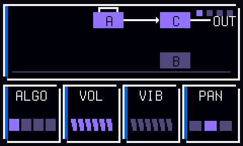
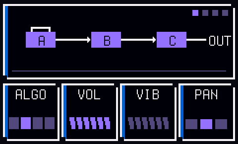
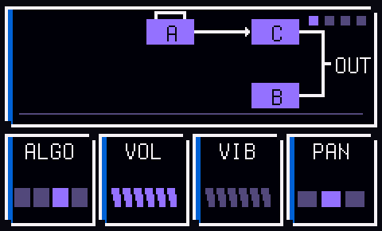
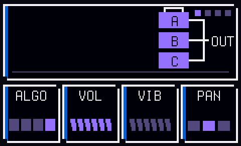

ChipboxMANUAL
1The main views
HOME flips between the main views.
RACK shows the channels of the current page.CHIP allows you to edit the patch of the chip being used in the selected channel.SONG is the order your pages play in.The top bar shows the console of the current channel, the page you're on, the note under the cursor and the tempo.
Hold
HOME to open the project view.GLO shows the help for whatever view you're on.GLO + HOME opens the menu.SEQ opens step entry for a channel (or the drum lanes).FX is used for punch-in effects.HOME will always 'go back' when you're in a submenu.2Channels
A channel is one voice of one chip.
You can have up to 16 channels, in any mix.
Select the + row at the bottom of the rack with
PRESETS, then press OCT+ to add a channel.
Choose a console, then a channel.
OCT- goes back a step.PRESETS selects the channel in the RACK, CHIP and STEP views.Hold
EDIT on a channel to remove it.Hold
SEL on a channel to copy it. You can copy the patch only, or the patch and the notes.| Console | Channels | Documentation |
|---|---|---|
| NES | Pulse, Triangle, Drums | APU, APU mixer (NESdev wiki) |
| Game Boy | Pulse, Wave, Drums | Audio (Pan Docs) |
| Master System | Tone, Drums | SN76489 (SMS Power!) |
| PC Engine | Wave, Drums | PC Engine (Furnace manual) |
| Atari 2600 | Sound, Drums | TIA hardware notes (Andrew Towers) |
| Konami VRC6 | Pulse, Saw, Drums | VRC6 audio (NESdev wiki) |
| AY-3-8910 | Tone, Drums | AY-3-8910 (Wikipedia) |
| Mega Drive | FM, Drums | Mega Drive audio (Sonic Retro), YM2612 (Wikipedia) |
| Virtual Boy | Wave, Drums | Virtual Boy (Furnace manual) |
The drum kits also borrow from the Game Boy sound hardware page (its noise modes) and the YM2413 notes in the Furnace manual (the Master System kit's cymbals).
3The rack
Each row is a channel.
A page is 16 steps, which is one bar.
KNOB 1 sets the tempo, from 40 to 240 bpm.
ALGORITHM flips through the pages.PLAY plays the song from the current page.Hold
PLAY to loop just the current page.SELECT is the tape dial. Turn it right to play (half speed, normal speed or double speed) or left to play backwards. The middle position pauses.While the tape is stopped,
SELECT moves the cursor.While the tape is stopped, a key writes its note on the cursor's step. Press the same key again to remove it.
OCT- and OCT+ move the keys down or up an octave, by up to two octaves.ARP shows or hides note tails, the line under a long note.4Writing notes
There are three ways to write notes. You can mix them.
Step entry
SEQ opens the current page as 16 blocks.
A key sets the block under the cursor and moves to the next one.

SELECT moves the cursor, so you can leave rests.EDIT clears the block.KNOB 2 sets the length of a note, in steps. Turn it while you hold a key, or while the cursor is on a note.
PLAY loops the page while you work.Recording
REC loops the page and starts recording.
A key lands on the step nearest the playhead.
Hold a key to set the length of the note.
Hold
EDIT to erase notes as the playhead passes them.Turn
SELECT left once to record at half speed.Drums can't be recorded live. Use the drum lanes.
5The chip screen
CHIP shows the patch of the selected channel.
KNOB 1 to KNOB 4 change the four cards on screen.ALGORITHM flips between the pages of cards.
Page 1: the tone
| Card | What it does |
|---|---|
DUTY, WAVE, BUZZ, NOISE or ALGO | The first knob. It depends on the chip. See the consoles below. |
VOL | Sets the level of the channel. |
VIB | Sets the depth of the vibrato. |
SWEEP | Slides the pitch up or down while a note is held, by up to 15 semitones a second. |
PAN | Sets left, centre or right. Chips with stereo have PAN instead of SWEEP. |
Page 2: the envelope
ATK is how long the sound takes to rise.DEC is how long it takes to fall to SUS.SUS is the level it holds while the key is down.REL is how long it takes to fade out after you let go.Page 3: the arp
SHAPE picks the chord.The chords are octave, major, minor, major 7th, minor 7th, sus4, power and diminished.
RATE sets the speed.DIR is up, down, or up and down.Page 4: waves and FM
Channels with a wave have a fourth page:
SHAPE, FOLD, STEP and TWIST.SHAPE morphs between pulse, saw, triangle and sine.FOLD folds the wave back on itself, which makes it brighter.STEP reduces the number of levels, which crushes the wave.TWIST bends the wave sideways.The Mega Drive's fourth page is explained below.
6The consoles
| Console | Notes |
|---|---|
| NES | Pulse has four duties: 12.5, 25, 50 and 75 percent. Triangle has no volume knob. The output goes through the NES's own filters. |
| Game Boy | Pulse has four duties. Wave has four volume steps and stereo. The output goes through the Game Boy's high-pass filter. |
| Master System | Tone is a square wave with 16 volume levels. |
| PC Engine | Wave has 16 volume levels and stereo. |
| Atari 2600 | BUZZ picks one of ten sound types, from clean tones to buzzes to white noise. |
| Konami VRC6 | Pulse has eight duties. Saw is a stepped saw wave. |
| AY-3-8910 | Tone is a square wave with 16 volume levels. NOISE mixes in noise. At 15 it is only noise, which is useful for hats and snares. The pitch of the note sets the brightness of the noise. |
| Mega Drive | FM has three operators, A, B and C. ALGO sets how they connect. See below. |
| Virtual Boy | Wave has 32 steps of 6 bits, which is finer than the Game Boy. It has stereo. |
Mega Drive FM
ALGO picks how three operators, A, B and C, connect.A box is an operator. A wire from one box to another means the first modulates the second.
Only the boxes wired to
OUT are heard.The loop over
A is its feedback, set by FB.ALGO 1: A modulates C. B is off.
ALGO 2: A modulates B, and B modulates C.
ALGO 3: A modulates C. B plays on its own, an octave above.
ALGO 4: A, B and C all play on their own. B is an octave above.
RATIO sets how high A sits above the note, from half to 14 times.INDEX sets how hard A pushes the sound.FB feeds A back into itself. High values sound like noise.DECAY sets how fast INDEX dies away. Higher values sound plucked.7Drums
Every console has its own drum kit.

The drums are
BD (kick), SD (snare), LT, MT and HT (toms), RS (rimshot), CP (clap), CH (closed hat), OH (open hat), CR (crash) and RD (ride).SEQ opens the drum lanes, with one row per drum and 16 steps across.
Use the black keys to change the drum in the kit.
The 16 white keys align to the 16 steps in the page.

Hold
ENV while you press a white key to place an accent, a louder hit. On a hit that is already there, ENV switches the accent on or off.EDIT clears the picked drum on the current page.8The song
SONG shows a row of slots. Each slot holds a page.
A page can be used in more than one slot.
SELECT moves the cursor.Use the
PRESETS knob to change the page used in the selected slot.OCT+ adds a slot after the current one, with a new empty page.OCT- removes the slot.Tap
EDIT to open the slot's page in the RACK.Hold
EDIT to copy the page. The copy replaces the page in this slot only.PLAY plays the song from the current slot.9Projects
Hold
HOME to open the project view. It has eight tiles, each with a small picture of the first page.
SELECT or PRESETS moves between tiles. OCT+ opens a tile. OCT- goes back.Open an empty tile to start a new project.
Hold
SEL on a tile to copy that project into the first empty tile.Hold
EDIT on a tile to delete that project.Projects save automatically when nothing is playing. Hit
SAVE to force a save just in case.The
SAVE light glows while there are unsaved changes.Factory Reset in the menu (
GLO + HOME) deletes all your projects.10Undo
At any time, you can undo changes with the
LFO key.
NOTE: you can't redo an undone change, so be careful!
11Effects
FX turns the 16 white keys into effects pads.
| Pad | What it does |
|---|---|
TAPE | Controls the tape with SELECT. |
RPT (three pads) | Repeats the current step every eighth, sixteenth or thirty-second note. |
LPF | Low-pass filter. |
HPF | High-pass filter. |
ECHO | Tape echo. |
VERB | Reverb. |
CRSH | Reduces the number of levels. |
DECI | Reduces the sample rate. |
GATE | Chops the sound every sixteenth note. |
DIVE | Drops the pitch an octave. |
WOB | Wobbles the pitch. |
SOLO | Plays only the selected channel. |
KILL | Silences everything. |
HOLD | Keeps pads on after you let go. |
12The numbers
| Channels | 16 |
| Steps in a page | 16 |
| Pages | 64 |
| Slots in a song | 128 |
| Projects | 7, and the demo |
| Undo | 6 changes |
| Notes in a project | About 2000 |
| Tempo | 40 to 240 bpm |
13Updates and rescue
Install and update firmware with the install page.
If your FM-1 gets bricked or stuck in a weird place, hold
OCT- while plugging it in. The install page will fix it from there.